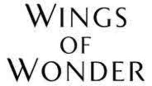

Trade Mark Journal No.2025/019 9 May 2025
UK00004192719 22 April 2025 (14)

- Class 14
- Agates; clock hands; ingots of precious metals; jewellery of yellow amber; jewelry of yellow amber; pearls made of ambroid [pressed amber]; amulets [jewellery]; amulets [jewelry]; spun silver [silver wire]; silver thread [jewellery]; silver thread [jewelry]; clocks; pendulums [clock- and watchmaking]; barrels [clock- and watchmaking]; bracelets [jewellery]; bracelets [jewelry]; wristwatches; watch bands; straps for wristwatches; watch straps; jewellery charms; jewelry charms; charms for jewellery; charms for jewelry; brooches [jewellery]; brooches [jewelry]; dials [clock- and watchmaking]; sundials; clockworks; chains [jewellery]; chains [jewelry]; watch chains; chronographs [watches]; chronometers; chronoscopes; chronometric instruments; necklaces [jewellery]; necklaces [jewelry]; clocks and watches, electric; tie clips; coins; diamonds; threads of precious metal [jewellery]; wire of precious metal [jewellery]; threads of precious metal [jewelry]; wire of precious metal [jewelry]; atomic clocks; control clocks [master clocks]; master clocks; clock cases; iridium; ivory jewellery; ivory jewelry; ornaments of jet; jet, unwrought or semi-wrought; copper tokens; jewellery; jewelry; lockets [jewellery]; lockets [jewelry]; medals; precious metals, unwrought or semi-wrought; watches; watch springs; watch glasses; watch crystals; movements for clocks and watches; olivine [gems]; peridot; gold, unwrought or beaten; gold thread [jewellery]; gold thread [jewelry]; osmium; palladium; ornamental pins; pearls [jewellery]; pearls [jewelry]; semi-precious stones; precious stones; platinum [metal]; alarm clocks; rhodium; ruthenium; spinel [precious stones]; statues of precious metal; paste jewellery; paste jewelry [costume jewelry]; alloys of precious metal; anchors [clock- and watchmaking]; rings [jewellery]; rings [jewelry]; works of art of precious metal; boxes of precious metal; hat jewellery; hat jewelry; earrings; shoe jewellery; shoe jewelry; cuff links; busts of precious metal; watch cases [parts of watches]; presentation boxes for watches; figurines [statuettes] of precious metal; statuettes of precious metal; pins [jewellery]; pins [jewelry]; tie pins; badges of precious metal; key rings [split rings with trinket or decorative fob]; key chains [split rings with trinket or decorative fob]; silver, unwrought or beaten; stopwatches; cloisonné jewellery; cloisonné jewelry; jewellery boxes; jewelry boxes; beads for making jewellery; beads for making jewelry; clasps for jewellery; clasps for jewelry; jewellery findings; jewelry findings; jewellery rolls; jewelry rolls; cabochons; split rings of precious metal for keys; presentation boxes for jewellery; presentation boxes for jewelry; watch hands; misbaha [prayer beads]; bracelets made of embroidered textile [jewellery]; bracelets made of embroidered textile [jewelry]; charms for key rings; charms for key chains; rosaries; chaplets.
Promomark SA
Representative: Beck Greener LLP